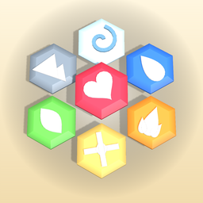

Hexhold
Wash ashore on a windy island, pick up an axe, and see where the road takes you.
In development · Now in TestFlightWhat it is
Hexhold (a working title) is an offline adventure for iPhone and iPad in the spirit of Old School RuneScape. The world is a board of hexes: tap where you want to go, and everything happens on a steady 0.6-second game tick. Chop, fish, mine, smith and cook; fight with steel or with magic tiles laid in a rosette; run a market stall; and travel the six provinces of the Wardlands.
For iPhone and iPad, played in portrait with one thumb. No account, no ads, no tracking, and no internet needed. Names in the game are working names and may change before release.
Get help
Found a bug, stuck somewhere, or have an idea? If you're testing through TestFlight, send feedback from the TestFlight app, or take a screenshot while playing and TestFlight will offer to send it.
When reporting a bug, it helps to include your iPhone model, iOS version, where in the game you were and what you were doing.
Common questions
Do I need to be online?
No. Hexhold runs entirely on your iPhone. There are no servers, no account and nothing to sign in to.
How do I save?
You don't need to. The game saves every few seconds when something changes, and again whenever you leave the app, travel or sleep.
Does anything happen while the game is closed?
Once a skill is high enough and you've unlocked Muscle Memory, yes: your character keeps gathering or making things at a slower pace, for up to 12 hours. Everything else, including the clock and your market stall, waits for you.
I died. Have I lost my things?
No. Unless you chose Hard mode, everything waits in a grave near where you fell, and the grave never expires. The compass points to it.
How does magic work?
You cast by laying hex tiles in the rosette on the Magic tab. The mix decides the spell, the order doesn't matter, and a mix that isn't a spell never costs you anything.
I'm stuck on a quest.
Open the Journal: your latest diary line is there, with any controls tip for that step underneath. You can also talk to whoever gave you the quest; they'll repeat what's next. Try long-pressing things near where the quest points you, and check the time of day.
How do I start over?
Tap New Game on the title screen. It starts in an empty save slot, so your other saves are kept (up to five). To wipe the save you're playing, use ··· › Settings › Reset save…. It asks first, and a reset save can't be recovered.
Can I move my save to a new phone?
Yes. Open Saves on the title screen and tap Export on a slot, then AirDrop the .hexhold file, send it, or save it to Files. On the other iPhone or iPad, put the file in the Hexhold folder in the Files app and open the game to import it.
Privacy
Hexhold collects nothing. Your save and settings stay on your device. There are no accounts, no ads, no analytics and no third-party services. Read the privacy policy.